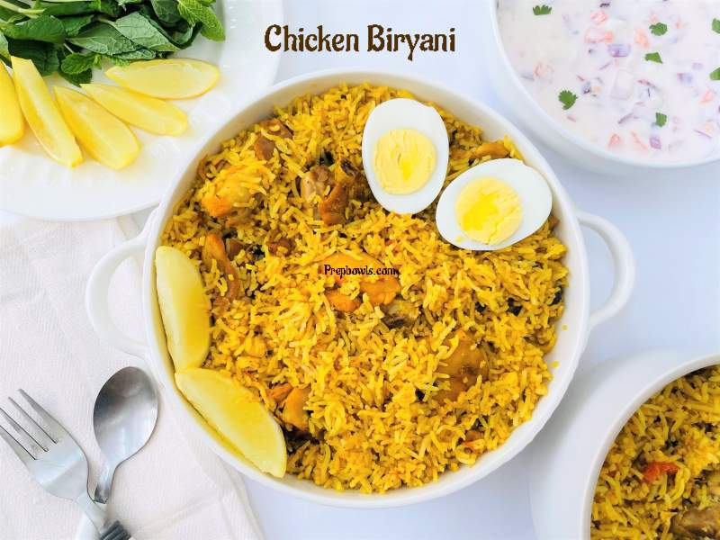
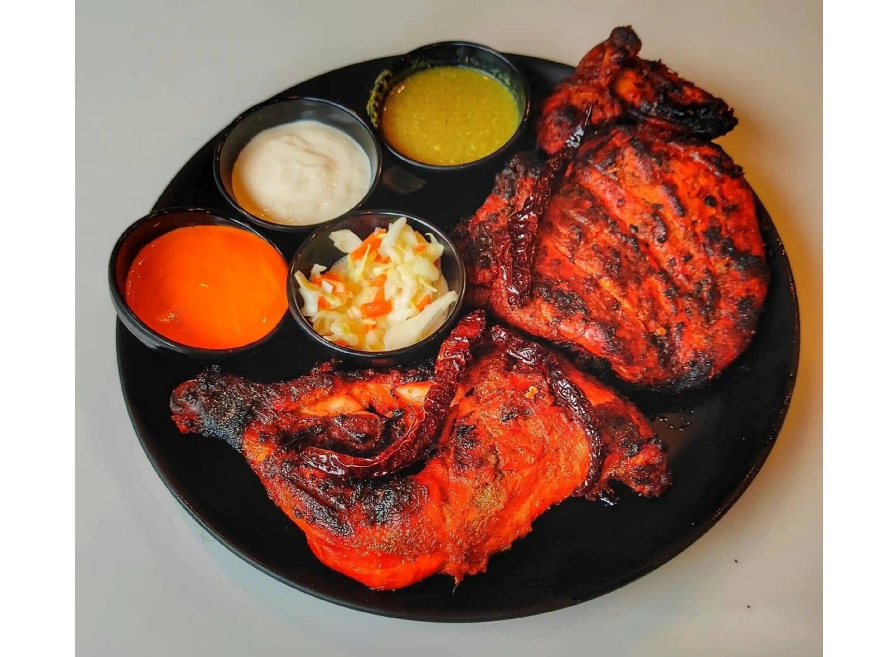
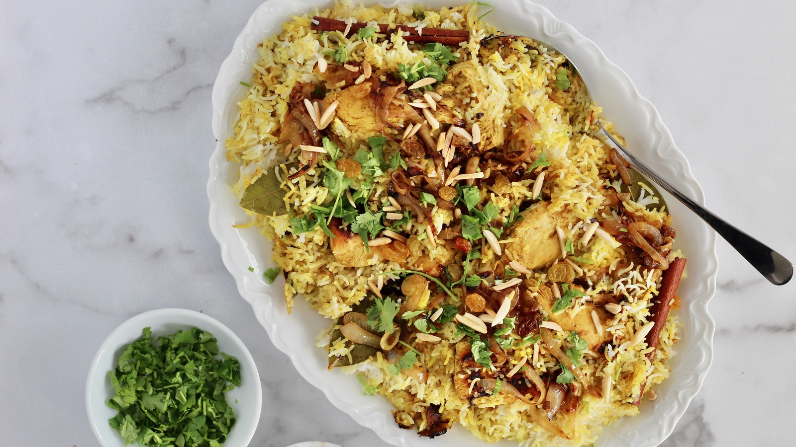
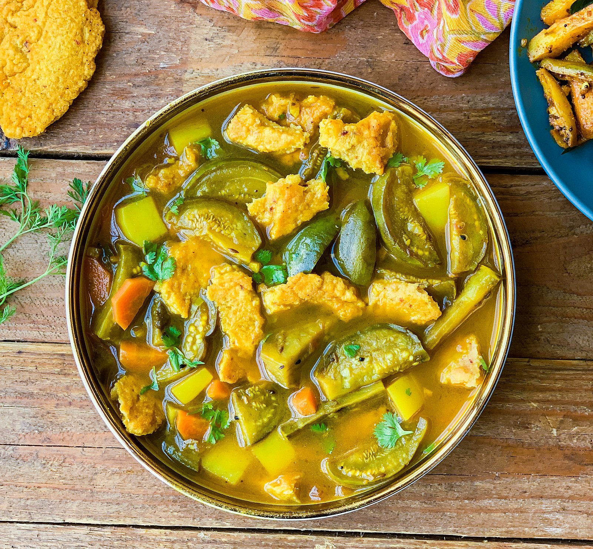
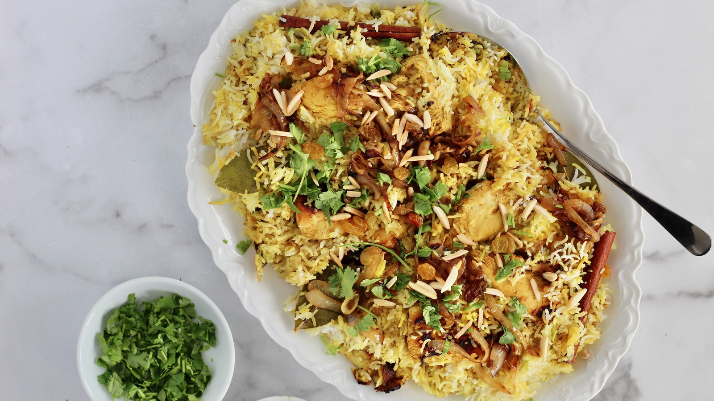
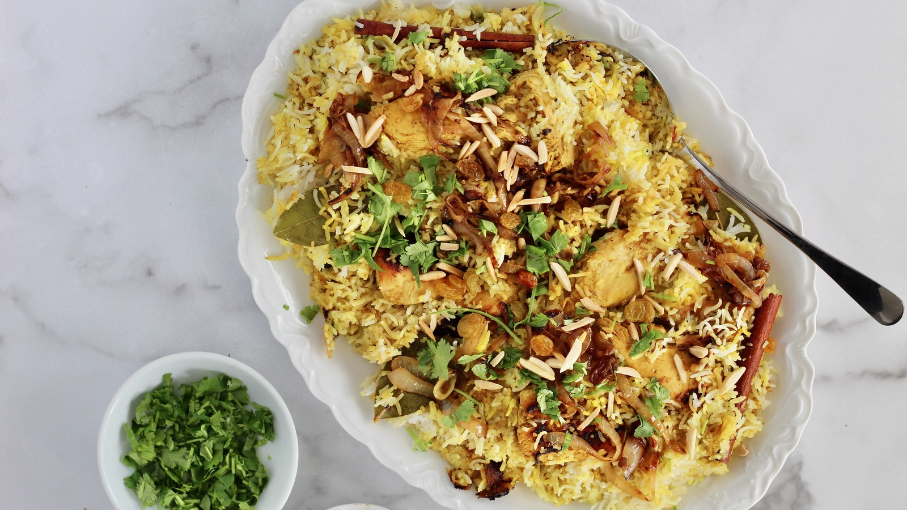

Here is the recipe for rice biryani with chicken, an Indo-Pakistani dish. It is frequently found in Indian restaurants. It is a recipe based on basmati rice with many Indian spices and embellished with pieces of chicken. Easy recipe to cook at home.

 
Ingredients of the recipe:
FOR CHICKEN:
1 kg 350 bone-free and skinless chicken
4 tbsp vegetable oil
Four small potatoes
2 onions
Two cloves garlic
A small piece of ginger
1/2 tsp red chili powder
1/2 tsp black pepper
1/2 tsp turmeric powder
One tsp cumin powder
One tsp salt
2 tomatoes
2 tbsp plain yogurt
Some fresh mint leaves
1/2 tsp green cardamom
One cinnamon stick
FOR BIRYANI RICE:
500 g of basmati rice
2 and 1/2 tbsp vegetable oil
One large onion
One pinch of saffron powder
Five green cardamom pods
3 cloves
One cinnamon stick
1/2 tsp ginger powder
4 cups chicken broth
1 and 1/2 tsp salt
Preparation of the dish:
FOR CHICKEN:
Cut the chicken into pieces. Peel the potatoes and cut in 2. Prevent onion half cup fry garlic and ginger. Cut peel and tomato.
In a frying pan, heat 2 tbsp of oil and fry the frying potatoes until golden. Drain and reserve the potatoes.
Add the remaining 2 tbsp oil and fry the onion, garlic, and ginger until the onion is golden.
Add pepper, pepper, turmeric, cumin, salt, and tomatoes. Fries were constantly growing for 5 min.
Alim and cinnamon stick. Cooking on the cover and low heat, forming occasionally until tomatoes are well cooked. The mixture becomes very dry and adds a little hot water when the stick starts.
If the mixture is thick and smooth, add chicken mixture and mix well with spices mixture. The poultry is soft, up to 35mn, until the cooker is cooked with low heat and few pounds for a few minutes to reduce the sauce.
FOR BIRYANI RICE:
Cut the diced onion. Wash the rice and drain in a strainer for at least 30 minutes.
In a frying pan, heat the oil and fry the onions until they are browned. Add saffron, cardamom, cloves, cinnamon, ginger, and rice. Stir constantly until rice is well covered with spices.
In a saucepan, heat chicken broth and salt. When the mixture is hot pour it over the rice and mix well. Add chicken mixture and potatoes. Mix gently and bring to a boil. Cover, set on very gentle heat and leave for 20 minutes without lifting the lid or mixing.
Bengali Style Vegetable Curry with Lentil Patties
The Niramish Shobji Chapor Jhol is a delicious Bengali style vegetable curry made from fresh seasonal vegetables with potatoes, brinjal, pumpkin, carrots or any other vegetable in season. It is packed with flavours from the mustard oil in which is is cooked and the special bengali 5 spice powder the Panch Phoran and simmer. The addition of pan fried lentil patties makes this Niramish Shobji Chapor Jhol absolutely wholesome, rich in protein and delicious too.
Serve Niramish Shobji Chapor Jhol with hot steamed Steamed Rice and Aloo Parwal Sabzi for weekday lunch or dinner.

Ingredients of the recipe:
1 tablespoon Mustard oil
1/2 teaspoon Mustard seeds (Rai/ Kadugu)
2 Bay leaves (tej patta)
2 Green Chillies , finely chopped
2 Potato (Aloo) , peeled and diced
4 Brinjal (Baingan / Eggplant) , cut into wedges
1 Carrot (Gajjar) , peeled and diced
1/2 teaspoon Turmeric powder (Haldi)
1 tablespoon Panch Phoran Masala
1 teaspoon Salt , or to taste
1 teaspoon Sugar , or to taste
For Chapor
1/2 cup Yellow Moong Dal (Split)
1/4 cup Chana dal (Bengal Gram Dal)
2 Dry Red Chillies , broken
1/4 teaspoon Turmeric powder (Haldi)
1 tablespoon Mustard oil
Preparation of the dish:
To begin making the Niramish Shobji Chapor Jhol, prep all the ingredients
To make the chapor, soak the lentils for 2 hours. Once soaked drain the excess water and just keep about 2 tablespoons. Add the soaked dals along with red chilli, ginger, turmeric powder and salt to a jar of a mixer grinder. Blend to make an almost smooth thick paste. Try not adding adding more water as we want this to be a thick batter.
Next step is to shallow fry the dal mixture to make Chapor's also called as lentil patties. You can either make small patties or make one large one in the pan by adding all the batter and then cutting it to add into vegetables to make the Shobji with Jhol. Heat mustard oil in a heavy bottomed skillet. When the oil is smoking hot add the lentil paste and flatten it with your fingers to spread it evenly onto the pan. These chapor/ lentil patties will not have any definite shape. Cover the pan and allow the lentil patties to cook on the top. Once you can notice that the top is cooked, open the pan and flip over to cook on the other side. These 'Chapor'/ lentil patties are done, when you notice light brown spots and they are cooked.
The next step is to cook the vegetables. Heat mustard oil in a pressure cooker, add the mustard seeds and allow it to crackle, stir in the add panch phoran masala or bengali five spice mix, green chilies, bay leaves. As the spices release nice aroma add the all the cut vegetables with little salt and turmeric powder, and about 1/2 cup of water. Pressure cook for 3 to 4 whistles and turn off the heat. Allow the pressure to release naturally.
Once the pressure has released from the pressure cooker, break the chapor or the lentil patties and add into the vegetables. Add salt and sugar to taste and adjust the consistency by adding little more water and if you like your dish to be spicy add green more chopped chilies.
Give the Niramish Shobji Chapor Jhol a brisk boil for a couple of minutes and turn off the heat. Garnish with coriander leaves and transfer the Niramish Shobji Chapor Jhol to a serving bowl and serve hot.Serve Niramish Shobji Chapor Jhol with Steamed Rice and Aloo Parwal Sabzi for weekday lunch or dinner.
 
